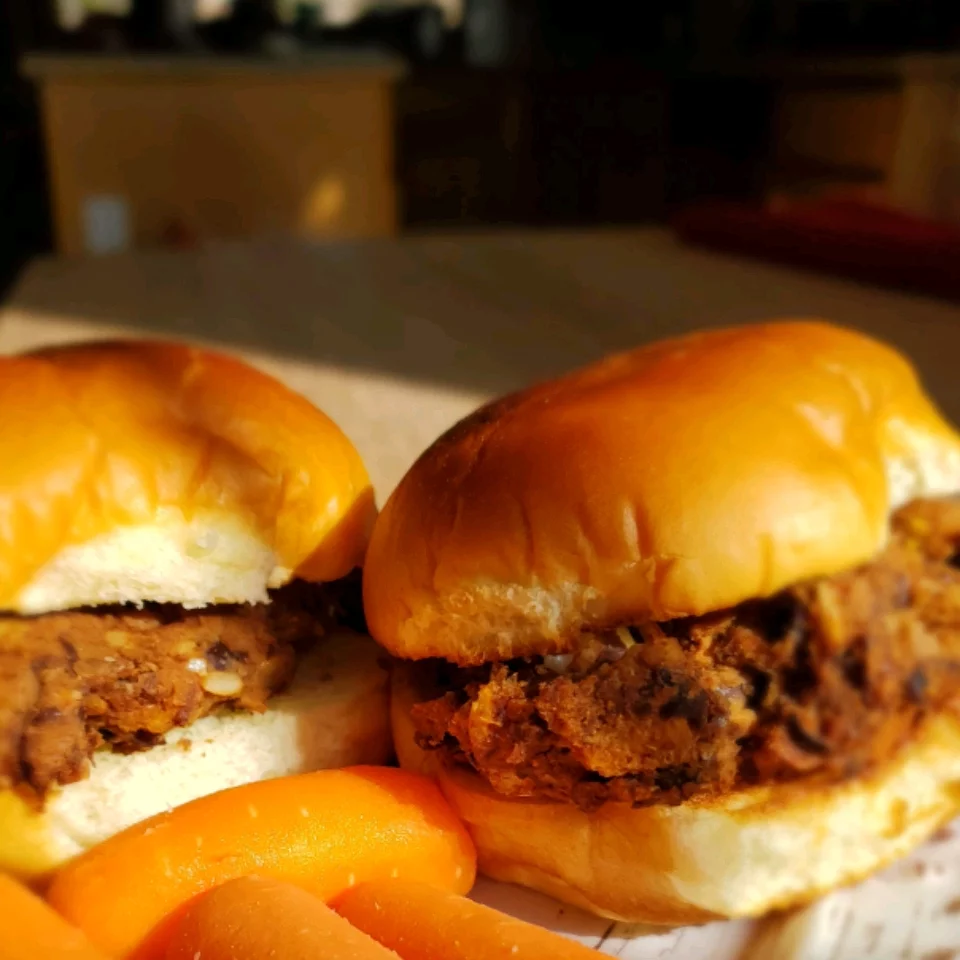

Homemade Black Bean Veggie Burgers

You will never want to eat frozen veggie burgers again. These are so easy,
and you'll be proud to have created such a vegetarian delight.
Ingredients:
- 1 (16 ounce) can black beans, drained and rinsed
- ½ green bell pepper, cut into 2 inch pieces
- ½ onion, cut into wedges
- 3 cloves garlic, peeled
- 1 egg
- 1 tablespoon chili powder
- 1 tablespoon cumin
- 1 teaspoon Thai chili sauce or hot sauce
- ½ cup bread crumbs
Steps:
- If grilling, preheat an outdoor grill for high heat, and lightly oil a sheet of aluminum foil.
- If baking, preheat oven to 375 degrees F (190 degrees C), and lightly oil a baking sheet.
- In a medium bowl, mash black beans with a fork until thick and pasty.
- In a food processor, finely chop bell pepper, onion, and garlic. Then stir into mashed beans.
- In a small bowl, stir together egg, chili powder, cumin, and chili sauce.
- Stir the egg mixture into the mashed beans. Mix in bread crumbs until the mixture is sticky
- and holds together. Divide mixture into four patties.
- If grilling, place patties on foil, and grill about 8 minutes on each side. If baking,
- place patties on baking sheet, and bake about 10 minutes on each side.
Home